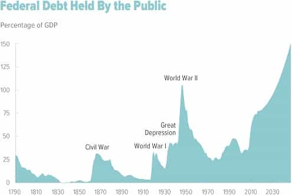

< < < Back
How Wealthy Americans Dodge Taxes – Return Of Kings
The American tax system is graduated, with the wealthier paying a higher amount. Whether or not this should be so is debatable. Arguments in favor are that they have a greater ability to pay and that they receive the most benefits from the system. Still, some very wealthy individuals end up paying a smaller proportion of their income in taxes than most working stiffs. How does this happen?
A closer look at the tax table

Taxation, Dutch style
Currently, adjusted gross income less deductions and exemptions is taxed at increasing brackets. For a single filer (2017 figures), it looks like this:
- $0-9325: 10%
- $9325-37,950: 15%
- $37,950-91,900: 25%
- $91,900-191,650: 28%
- $191,650-416,700: 33%
- $416,700-418,400: 35%
- $418,400 and up: 39.6%
So the first $9325 anyone makes, no matter how wealthy, gets taxed at 10%; the rest up to $37,950 at 15%; and so forth. (In case you’re wondering about the weird $416,700-418,400 bracket, it resulted from a compromise following a budget impasse in 2012. Bush the Younger’s tax cuts were extended permanently to them and below; those above reverted to the Clinton rate.) The 39.6% tax rate—once you get there—is pretty punishing, but there are ways to soften the blow.
A great way to do that is with investment income. It’s a complicated subject, but the short version is that if you sell property or a stock position after holding it for over a year, it’s taxed at 15%; otherwise, it’s 30% (still not too bad for high rollers). Note that CEO salaries are only part of their income; they often get stock options too. Also, losses offset gains; that helped me out once. At the best company I ever worked for, Superboy the CEO got hired on with a multi-million dollar salary, wrecked the company, and escaped on a golden parachute, but not before my job was “offshored”. At least I got a modest writeoff on my company stock that he trashed.
All told, that seems a bit weird—why are investment gains treated differently? Why isn’t investment income just income? This is to incentivize long term holds, reducing casino-style churn in the stock market. Following that 2012 compromise, Congress did impose a 3.8% increase for single filers with incomes at $200K or joint filers at $250K. Still, paying 18.8% on a long-term investment is considerably better than paying at the higher brackets. There are macroeconomic effects; this is a boost for Wall Street, at the expense of federal revenue.
Also, workers are dinged for FICA tax. As of 2017, this includes 6.2% of gross income for Social Security (the employer contributes the same amount too), and 1.45% for Medicare. If you’re self-employed, it’s 12.4% and 2.9%. However, Social Security tax is capped at incomes of $127,200; you pay nothing more after reaching that limit. Also, FICA isn’t imposed on investment income.
Legal tax breaks
Most of the good stuff is in Schedule A and Schedule D
Retirement accounts, such as traditional and Roth 401K and IRA plans, are tax-deferred. Also, you can make all the short-term trades you want, and the only consequence is pissing off the plan’s administrators. There are modest annual contribution limits, but most people don’t max them out, because they’ve got bills to pay. There’s another tax-advantaged program to save for a child’s education; though it’s not quite what it used to be.
Home ownership provides modest tax advantages. Interest, property taxes, and PMI can be counted on the 1040 Schedule A. (Above a certain income limit, interest deductions taper out.) You also can count other things on Schedule A, such as charitable contributions, medical expenses above a certain amount, local taxes, and so forth. All told, itemizing could get you a better deal than your standard deduction. This is generally considered a middle class tax break, though it must be pretty cool to write off the property taxes on a mansion too.
Corporations also get a number of breaks. They can set up foreign shell corporations and move their operations to whichever country provides the best tax breaks and cheapest labor. For example, one automobile company in particular has a scheme whereby they move parts several times between the US and Mexican border, finishing the parts a little further at each step. That was engineered to maximize tax advantages. Is that an art or a science?
Also, a corporation can file bankruptcy without getting the officers a ten year blot on their personal credit rating. They even can run the company straight into the ground while pocketing a big salary, if they choose. Likewise, they can do a leveraged buyout and plunder another corporation.
The tax system is pretty screwy, and the government is aware of this. The Alternative Minimum Tax (line 45 on your 1040 form) was an attempt to deal with the loophole problem. I passed engineering calculus in college, but still I can’t wrap my little mind around this one. In response, the financial industry has created a number of AMT-free funds, so there are loopholes for that one too.
Funny money

Creative accountants can work miracles
There’s nothing wrong with taking advantage of tax breaks, if you’re following the letter and spirit of the law, but not everyone plays by the rules. For the wealthy, the possibilities for fudging the numbers increase, such as fake business expenses. One boss I worked for, a former millionaire, wrote off his Mercedes as a “company vehicle”. (A used rice burner simply won’t do for someone with narcissistic personality disorder.) There are rules about fleet vehicles, but it’s pretty much a matter of not getting caught with your hand in the cookie jar. Another former boss, a multi-billionaire, had a private resort in Vail, Colorado that he disguised as a fictitious corporate branch office. Awesome gravy!
Charitable contributions are a way to contribute to one’s favorite nonprofits and get a writeoff. Hopefully it’s for an actual humanitarian effort rather than a nasty leftist activism outfit, but yanno… Other than that, lying about the value of donated goods is as easy as saying “I didn’t inhale.” All that is theoretically subject to scrutiny. Still, someone could fudge the numbers so long as one doesn’t get greedy enough with it to get audited.
Again, offshore operations can help too. The government has cracked down on Swiss bank accounts, but the Cayman Islands refuses to cooperate. One attorney I knew, who had a very colorful history, used to fly there with suitcases full of money—about a million on each weekly trip. Everyone thought she was a rich tourist out for scuba diving, rather than a money launderer for a drug operation.
Scams on the low end of the income spectrum
Illegal aliens going to the USA, Uncle Sugar Land
Interestingly, the very poor have opportunities for tax fraud too. Earned Income Credit is a weird reverse income tax intended to help the working poor, but the system can be abused. Setting up a fictitious small business and claiming just enough income from that (but not too much) gets a decent payback. Having at least three minor children maximizes this. Not having a man in the house to help raise the kids is beneficial, since filing “head of household” gets better rates. Friendly tax consultants will help with the paperwork as needed. April 15 is basically a national holiday in many bad neighborhoods.
Other than that, working for cash only (like day laborers) avoids income taxes and FICA. You’re supposed to declare that, but yanno… On paper, they’re still poor enough to mooch off of several programs paid for by everyone else. Here’s something I found online a few years back:
John vs. Juan
You have two families: “John Legal” and “Juan Illegal”. Both families have two parents, two children, and live in Arizona. John Legal works in construction, has a Social Security Number and makes $25.00 per hour with taxes deducted. Juan Illegal also works in construction, has NO Social Security Number, and gets paid $15.00 in cash “under the table”. Ready? Now pay attention…
- John Legal: $25.00 per hour x 40 hours = $1000.00 per week, or $52,000.00 per year. Now take 30% away for state and federal tax; John Legal now has $31,231.00.
- Juan Illegal: $15.00 per hour x 40 hours = $600.00 per week, or $31,200 per year. Juan Illegal pays no taxes. Juan Illegal now has $31,200.00.
- John Legal pays medical and dental insurance with limited coverage for his family at $600.00 per month, or $7,200.00 per year. John Legal now has $24,031.00.
- Juan Illegal has full medical and dental coverage through the state and local clinics and emergency hospitals at a cost of $0.00 per year. Juan Illegal still has $31,200.00.
- John Legal makes too much money and is not eligible for food stamps or welfare. John Legal pays $500.00 per month for food, or $6,000.00 per year. John Legal now has $18,031.00.
- Juan Illegal has no documented income and is eligible for food stamps, WIC and welfare. Juan Illegal still has $31,200.00.
- John Legal pays rent of $1,200.00 per month, or $14,400.00 per year. John Legal now has 9,631.00.
- Juan Illegal receives a $500.00 per month Federal Rent Subsidy. Juan Illegal pays out that $500.00 per month, or $6,000.00 per year. Juan Illegal still has $ 31,200.00.
- John Legal pays $200.00 per month, or $2,400.00 for car insurance. Some of that is uninsured motorist insurance. John Legal now has $7,231.00.
- Juan Illegal says, “We don’t need no stinkin’ insurance!” and still has $31,200.00.
- John Legal has to make his $7,231.00 stretch to pay utilities, gasoline, etc.
- Juan Illegal has to make his $31,200.00 stretch to pay utilities, gasoline, and what he sends out of the country every month.
- John Legal now works overtime on Saturdays or gets a part time job after work.
- Juan Illegal has nights and weekends off to enjoy with his family.
- John Legal’s and Juan Illegal’s children both attend the same elementary school. John Legal pays for his children’s lunches, while Juan Illegal’s children get a government sponsored lunch. Juan Illegal’s children have an after school ESL program. John Legal’s children go home.
- Now, when they reach college age, John Legal’s kids may not get into a State School and may not qualify for scholarships, grants or other tuition help, even though John has been paying for state schools through his taxes, while Juan Illegal’s kids “go to the head of the class” because they are a minority.
- John Legal and Juan Illegal both enjoy the same police and fire services, but John paid for them and Juan did not pay.
If you vote for or support any politician that supports illegal aliens… You are part of the problem!
How it was and how things are now

Long term budget outlook, actual figures as of 2017 with future projections of national debt to GDP. It’s time to fix this before we go the way of Greece.
The federal government used to fund itself pretty much exclusively on tariffs. This incentivized American companies to keep factory operations within the USA, a benefit for working people here. Income tax started as a modest tax on the very wealthy. It expanded greatly in WWI, and went sky-high in WWII, far beyond what we have today. Also, the New Deal created the FICA tax. Today, that’s a pretty hefty chunk of federal revenue and likely to grow larger in the future. After the “free trade” gold fever, tariffs are now a tiny sliver of revenue.
Even all that doesn’t cover the government’s spending. The USA has had a problem with budget deficits since the Spanish-American War. WWI (the “war to end all wars”) didn’t help; the USA should’ve stayed out of that one, but all that’s another discussion. We also made very generous loans to other countries then, and only Finland paid everything back. WWII (the “war to make the world safe for democracy”) drove the national debt through the roof. Later, the arms race with the Soviet Union, and several spit-in-your-eye wars against Communist regimes and Middle Eastern despots, added to the millstone of debt.
Only during the 1990s tech boom has the USA been able to make much effort toward paying it down. This unsustainable spending is enabled by the Federal Reserve, a private banking consortium. All that will have to be repaid, with interest. I’m not a big Ross Perot fan, but he got it right about fiscal responsibility. We need to get serious about things like government waste, pork barrel spending, unsustainable social programs, and misguided foreign aid.
Now I really get political (you knew I would)
The existence of champagne Socialists is a strange paradox. They’re wealthy, yet support economically leftist policies. Marxists say that rightist proletarians are class enemies who exhibit false consciousness; in these terms, champagne Socialists are all this in drag. More troubling is their support for socially leftist policies, but all that’s another story.
So then, why do they support things like higher taxes for themselves and social programs that act as income redistribution schemes? Is it because they’re so gosh darn generous? Think again. Whatever their political persuasion, the rich aren’t burdened by high taxes as much as you might expect, if they play their cards right.
Wealthy liberals actually are very generous—with other people’s money. Middle class working stiffs who play by the rules get the least amount of breaks from the system. Washington legislates costly social programs, and Middle America pays a pretty big part of the bill. We also suffer other effects of their social engineering, of course. Further, government dependency creates other problems, but once again, all that’s another story.
Read More: How The Government Is Robbing Men Of Good Wives